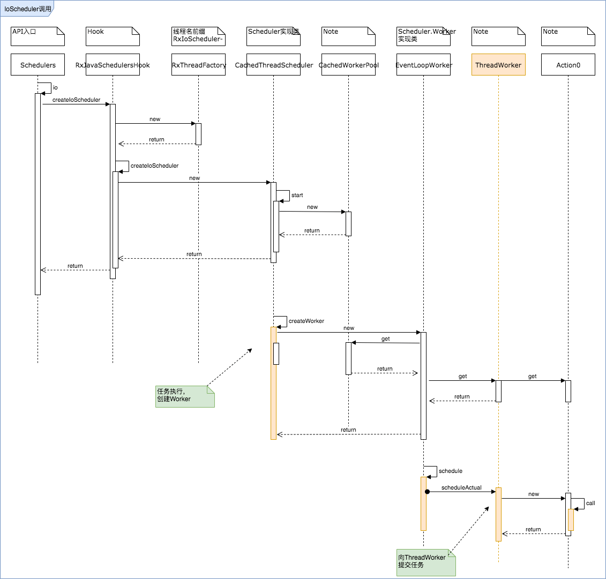

调度器分析-IO
Rx内置了一些Scheduler方便我们做线程切换，同时我们也可以自定义Scheduler，这样可以将Rx框架的线程池与App现有的线程池进行复用，本文一起分析下原生的Scheduler的工作原理的实现机制。
调度器使用
一个Scheduler可以通过subscribeOn方法，将Observable发射流挂在知道线程上，这个动作只在首次调用生效。在事件发射后的每一操作符也可以指定执行线程，方法是在操作符前通过observeOn切换线程。
关于subscribeOn和observeOn的区别可以参考Rx的说明文档，记住他的几个特性：
- subscribeOn只有首次调用生效，作用于事件发射的产生处和doOnSubscribe（一个特殊的回调）；
- observeOn每次调用都生效，作用于其后的操作符；
IO调度器
个人感觉在Andorid算是最常用的一个调度器吧。IO耗时的异步任务一般都选择它，比如http请求，磁盘读写等。
/**
* Creates and returns a {@link Scheduler} intended for IO-bound work.
* <p>
* The implementation is backed by an {@link Executor} thread-pool that will grow as needed.
* <p>
* This can be used for asynchronously performing blocking IO.
* <p>
* Do not perform computational work on this scheduler. Use {@link #computation()} instead.
* <p>
* Unhandled errors will be delivered to the scheduler Thread's {@link java.lang.Thread.UncaughtExceptionHandler}.
*
* @return a {@link Scheduler} meant for IO-bound work
*/
public static Scheduler io() {
return RxJavaHooks.onIOScheduler(getInstance().ioScheduler);
}
rx的API文档是三方库中写的较为完善的，甚至可以和Android Framework媲美。
通过Schedulers.io()使用IO调度器，记住几个关键词：IO耗时，线程池，按需扩增：
- 适用于IO敏感的任务
- 内部实现机制借助于java并发包concurrent下的API实现，也就是常说的Executor和线程池
- IO调度器适用于异步执行阻塞式的IO操作，不适用于计算型任务
- 线程数会按需扩增，计算型任务务必使用
Schedulers.computation()
在没有使用hook替换io调度器的情况下，rx提供的默认值是怎么实现？
搞清这个问题有住于更好的使用和理解IO调度器的线程，方便我们做线程优化。
IoScheduler调用流程
当我们为Observable设置scheduler时，使用Scheduler.io()获取示例对象，通过SchedulersHook,以及CachedThreadSchduler层次转发后，最终任务在执行的时候，是向ThreadWorker提交Action0，Action0执行位置是提前创建好的线程池内。
这里面有很多中间层，简单介绍一下：
- RxJavaSchedulersHook负责创建Scheduler，包括hook逻辑
- IoScheduler的默认实现类是CachedThreadScheduler
- CacheThreadScheduler主要方法即使实现了createWorker
- createWorker具体来说，在实现的时候，通过EventLoopWorker包裹了一层CachedWorkerPool；虽然每次调用都创建新的EventLoopWorker实例，但是他们都复用同一个CachedWorkerPool对象
- EventLoopWorker复用CachedWorkerPool，但不一定服用Worker，在构造函数中每次通过pool的get方法得到一个合适ThreadWorker对象：取值有三种情况，
1.空实现；2.复用失效队列实例；3.创建新实例 - EventLoopWorker和ThreadWorker最终实现了Scheduler.Worker接口，他们是两个实现类
- EventLoopWorker同时也实现了Action0接口，在被订阅的时候执行call方法，并将ThreadWorker放入失效队列中，该接口推测是用于清理资源的
- 失效队列由一个定时Executor按默认60秒的时间轮询清理任务，因此ThreadWorker在release后，60纳秒内就会被释放
- 提交任务调用的是subscribe，提交一个Acton0对象，经由EventLoopWorker的subscribe方法，最终交付给ThreadWorker的subscribeActual中执行

ThreadWorker与线程池的关系
上面一节我们已经分析道最终任务是由ThreadWorker来负责执行的，他的内部实现借用了线程池的API，现在我们看一下具体与线程池是怎么配合的。
ThreadWorker继承了NewThreadWorker，自身仅提供了一个失效时间，因此我们分析他的基类NewThreadWorker。
/**
* Represents a Scheduler.Worker that runs on its own unique and single-threaded ScheduledExecutorService
* created via Executors.
*/
public class NewThreadWorker extends Scheduler.Worker implements Subscription {
private final ScheduledExecutorService executor;
// ...
/* package */
public NewThreadWorker(ThreadFactory threadFactory) {
ScheduledExecutorService exec = Executors.newScheduledThreadPool(1, threadFactory);
// Java 7+: cancelled future tasks can be removed from the executor thus avoiding memory leak
boolean cancelSupported = tryEnableCancelPolicy(exec);
if (!cancelSupported && exec instanceof ScheduledThreadPoolExecutor) {
registerExecutor((ScheduledThreadPoolExecutor)exec);
}
executor = exec;
}
}
从注释和构造函数，可以得到一个重要信息：
每一个ThreadWorker对应一个单线程的线程池newScheduledThreadPool，具备定时提交能力
同时还有一些static的成员，比如一个
private static final ConcurrentHashMap<ScheduledThreadPoolExecutor, ScheduledThreadPoolExecutor> EXECUTORS;
在构造函数中，会将ThreadWorker本身注册到全局的Map中。类似的，也开启了一个单线程的定时轮询purge线程池，默认1000毫秒间隔。
ThreadWorker本身也继承了Subscription，当被取消订阅是，会触发线程池的销毁动作：
@Override
public void unsubscribe() {
isUnsubscribed = true;
executor.shutdownNow();
deregisterExecutor(executor);
}
小结
总结一下IO调度器的核心点
- 适用于IO敏感的任务，内部由concurrent的线程池实现
- 默认的实现类是CacheThreadScheduler，内部通过createWorker创建了Worker实例
- 每个ThreadWorker实例对应一个单线程的定时线程池newScheduledThreadPool
- Worker被取消订阅时，自动销毁对应的线程池